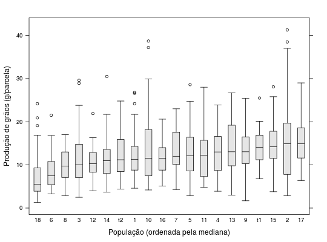

Experimento referente à produção de arroz obtida na avaliação de 18 populações \(F_{2}\) e duas linhagens utilizadas como testemunhas. O Experimento foi realizado em blocos casualizados.
Um data.frame com 600 observações e 4 variáveis, em
que
popreptplantprodRAMALHO et al. (2005), pág. 112.
library(lattice) data(RamalhoEx7.10)#> Warning: data set ‘RamalhoEx7.10’ not foundstr(RamalhoEx7.10)#> 'data.frame': 600 obs. of 4 variables: #> $ pop : Factor w/ 20 levels "1","10","11",..: 1 1 11 11 12 12 13 13 14 14 ... #> $ rept : int 1 2 1 2 1 2 1 2 1 2 ... #> $ plant: int 1 1 1 1 1 1 1 1 1 1 ... #> $ prod : num 10.2 10.7 6.4 41.3 7.04 18.7 16.6 14 16.4 17.5 ...xtabs(~pop + rept, data = RamalhoEx7.10)#> rept #> pop 1 2 #> 1 15 15 #> 10 15 15 #> 11 15 15 #> 12 15 15 #> 13 15 15 #> 14 15 15 #> 15 15 15 #> 16 15 15 #> 17 15 15 #> 18 15 15 #> 2 15 15 #> 3 15 15 #> 4 15 15 #> 5 15 15 #> 6 15 15 #> 7 15 15 #> 8 15 15 #> 9 15 15 #> t1 15 15 #> t2 15 15ps <- list(box.rectangle = list(col = 1, fill = c("gray90")), box.umbrella = list(col = 1, lty = 1), plot.symbol = list(col = 1, cex = 0.7)) bwplot(prod ~ reorder(pop, prod, median), data = RamalhoEx7.10, horizontal = FALSE, pch = "|", xlab = "População (ordenada pela mediana)", ylab = "Produção de grãos (g/parcela)", par.settings = ps)